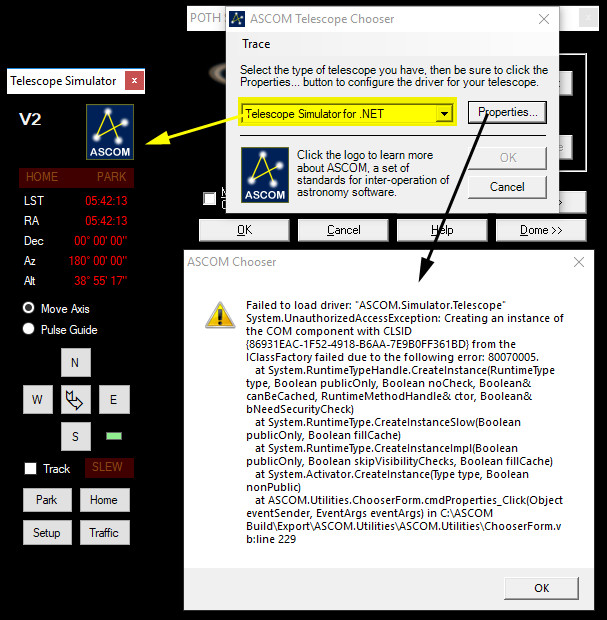
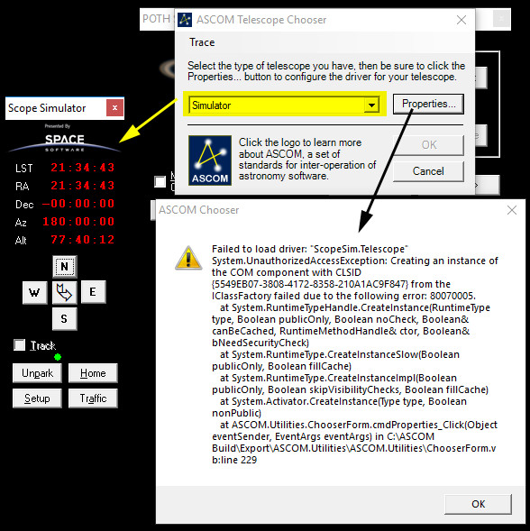
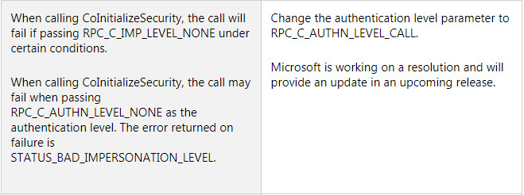

I have confirmed this to be a general problem introduced by KB4056892 (and we now know that KB4056898 for Windows 8.1 has the same security change)! I started with a clean Windows 10 system with only ASCOM Platform 6.3. I tested POTH connecting to the ASCOM Telescope Simulator for .NET and the old ASCOM Telescope Simulator (VB6 Based). No problems. Then I manually installed KB4056892. After that here are the results:


Rowland Archer nailed it in the ACP Forum discussion thread by posting the "known issue"

This is it. See the next post for how to solve it.
Results 1 to 5 of 5
Threaded View
-
Jan 6, 2018, 23:30 #2

Last edited by Bob Denny; Yesterday at 21:12. Reason: Add info for Windows 8.1 KB4056898
-- Bob

Thread Information
Users Browsing this Thread
There are currently 1 users browsing this thread. (0 members and 1 guests)
Similar Threads
-
Windows 10 updates causing issues with ACP
By Dean Salman in forum Hardware/Software/Driver Topics Not Directly Related to Our SoftwareReplies: 12Last Post: Jan 8, 2018, 04:32 -
Windows 10 uninstall reinstall problems - a fix from Microsoft
By Colin Haig in forum Hardware/Software/Driver Topics Not Directly Related to Our SoftwareReplies: 1Last Post: Jan 3, 2017, 22:41 -
Mount failed to flip based on its reported pier side info. Wrong Alt/Az reported pos
By Steve Reilly in forum Hardware/Software/Driver Topics Not Directly Related to Our SoftwareReplies: 5Last Post: Jun 28, 2012, 02:18
 Posting
Permissions
Posting
Permissions
Powered by vBulletin� Version 4.2.4
Copyright � 2018 vBulletin Solutions, Inc. All rights reserved.
Copyright � 2018 vBulletin Solutions, Inc. All rights reserved.
All times are GMT. The time now is 07:00.
vBulletin 4.0 skin by CompleteVB